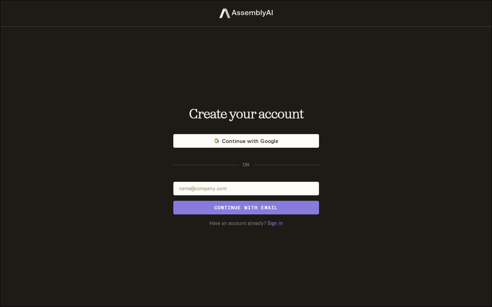
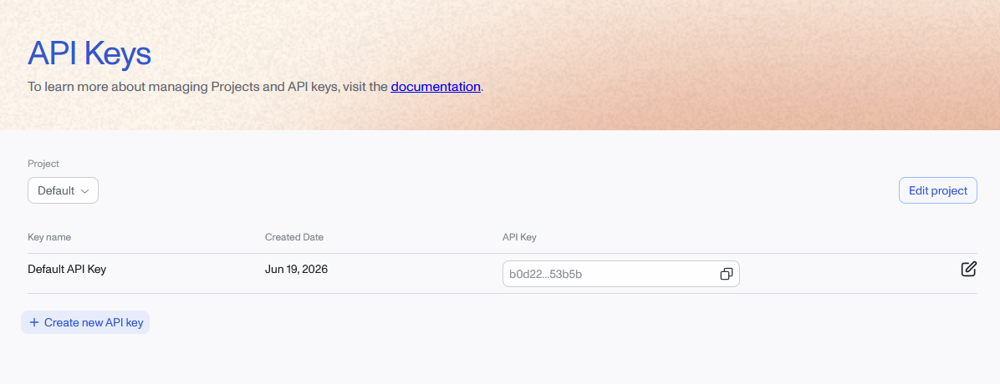
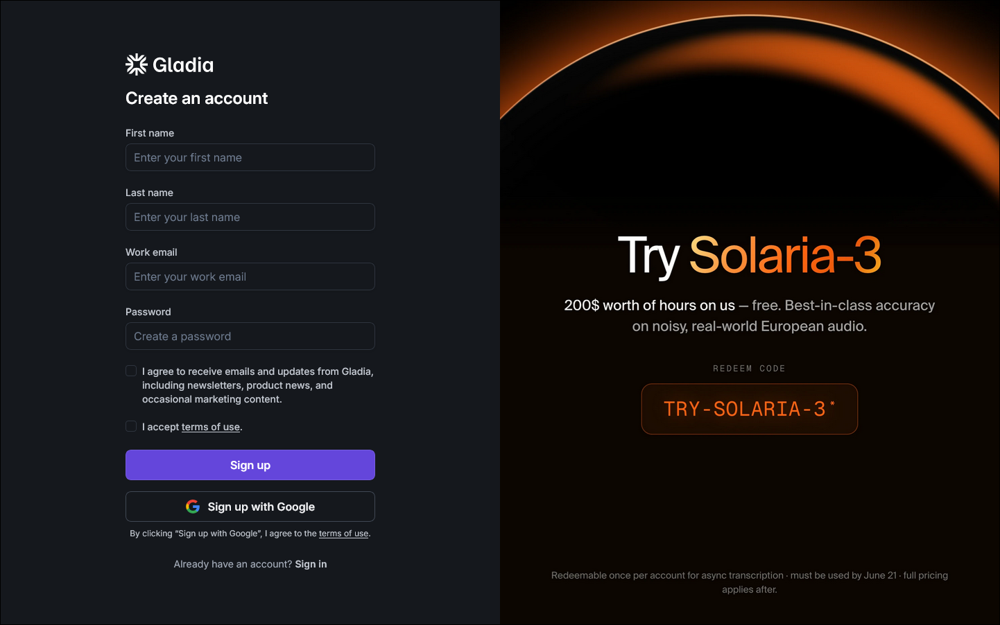
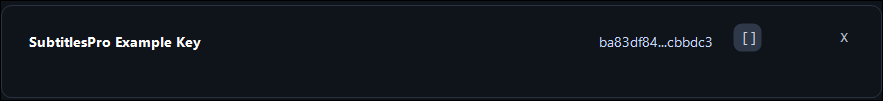
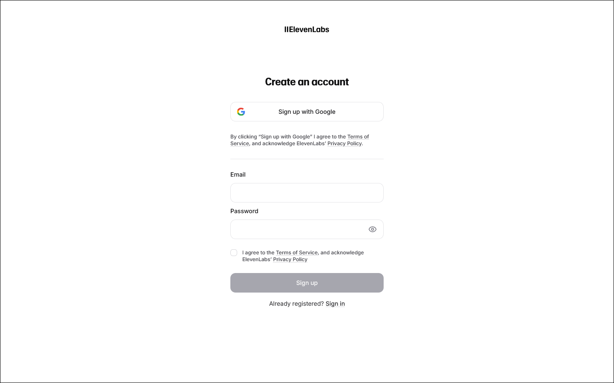
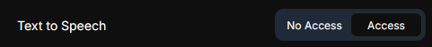
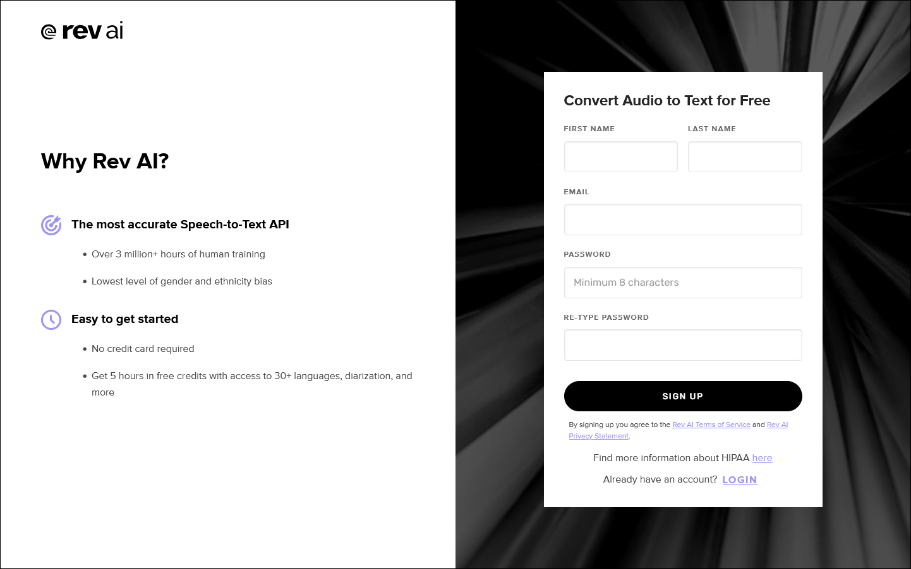
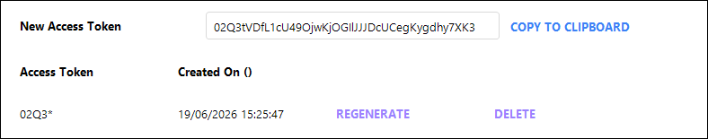

Transkriptionsanbieter
AssemblyAI
Verwendungszweck: Spracherkennung mit Zeitangaben auf Wortebene.
1 Rufen Sie https://www.assemblyai.com/dashboard/signup auf und erstellen Sie ein Konto (per E-Mail oder SSO). Eine Kreditkarte ist nicht erforderlich; neue Konten erhalten etwa 50 $ an Gratisguthaben (~330 Stunden).

2 Nachdem Sie Ihre E-Mail-Adresse bestätigt haben, öffnen Sie Manage ▸ API Keys in der linken Seitenleiste.

3 AssemblyAI erstellt einen Default API Key für das Projekt. Sie können diesen Schlüssel kopieren oder auf Create new API key klicken, wenn Sie einen eigens für SubVox Pro vorgesehenen Schlüssel erstellen möchten.

4 Wenn Sie einen neuen Schlüssel erstellen, geben Sie ihm einen aussagekräftigen Namen wie SubVoxPro oder Ihren Projektnamen und klicken Sie anschließend auf Create.

5 Kopieren Sie den API-Schlüssel aus der entsprechenden Tabellenzeile.

6 Fügen Sie ihn in SubVox Pro ein (Settings ▸ AssemblyAI).
Kostenlose Konten sind auf 2 Projekte / 2 API-Schlüssel begrenzt, was für SubVox Pro völlig ausreicht. Hilfeartikel: https://support.assemblyai.com/articles/7562135267-how-to-get-your-api-key
Gladia
Verwendungszweck: Spracherkennung.
1 Registrieren Sie sich bei https://app.gladia.io (per E-Mail oder Google).

2 Öffnen Sie nach der Anmeldung API Keys in der linken Seitenleiste. Hier listet Gladia alle mit Ihrem Konto verknüpften Schlüssel auf.

3 Wenn Sie einen eigenen Schlüssel für SubVox Pro wünschen, verwenden Sie das Erstellungsformular und geben Sie ihm einen aussagekräftigen Namen
wie SubVoxPro oder Ihren Projektnamen.

Kopieren Sie den Schlüssel nach der Erstellung aus der Liste. Gladia kürzt den angezeigten Wert möglicherweise später, daher kopieren Sie ihn sofort, solange Sie noch auf das vollständige Token zugreifen können.

4 Fügen Sie ihn in SubVox Pro ein (Settings ▸ Gladia).
Kostenloser Tarif: 10 Stunden Transkription pro Monat (max. 20 API-Aufrufe/Stunde, 3 gleichzeitig). Hilfe: https://support.gladia.io/article/how-to-get-the-api-key-from-my-account
Deepgram
Verwendungszweck: Spracherkennung.
1 Erstellen Sie ein Konto bei https://console.deepgram.com/signup – eine Kreditkarte ist nicht erforderlich, und Sie erhalten 200 $ an Gratisguthaben (das Guthaben verfällt ein Jahr nach der Registrierung).

2 Öffnen Sie in der Console über die linke Seitenleiste den Menüpunkt API Keys.

3 Klicken Sie auf Create a New API Key.

4 Geben Sie dem Schlüssel einen aussagekräftigen Namen. Wählen Sie unter Set expiration die Dauer, die zu Ihrem Arbeitsablauf passt; SubVox Pro erfordert keine bestimmte Gültigkeitsdauer für den Schlüssel.

5 Kopieren Sie den generierten geheimen Schlüssel und bewahren Sie ihn an einem sicheren Ort auf. Deepgram kann Ihnen diesen geheimen Schlüssel nicht erneut anzeigen.

6 Fügen Sie ihn in SubVox Pro ein (Settings ▸ Deepgram).
Speechmatics
Verwendungszweck: Spracherkennung.
1 Rufen Sie das Speechmatics Portal unter https://portal.speechmatics.com auf und erstellen Sie ein Konto. Der kostenlose Tarif bietet ein einmaliges Guthaben von 100 $, ohne dass eine Kreditkarte erforderlich ist.

2 Öffnen Sie in der Projekt-Seitenleiste den Menüpunkt Manage ▸ API Keys.

3 Klicken Sie auf Create new key.

4 Geben Sie dem Schlüssel einen aussagekräftigen Namen und klicken Sie anschließend auf Generate new key.

5 Kopieren Sie den Schlüssel, bevor Sie den Dialog schließen. Aus Sicherheitsgründen wird Speechmatics ihn nicht erneut anzeigen.

6 Fügen Sie ihn in SubVox Pro ein (Settings ▸ Speechmatics).
Dokumentation: https://docs.speechmatics.com/get-started/authentication
ElevenLabs
Verwendungszweck: Spracherkennung (ElevenLabs Scribe) und Synchronisation mittels Sprachsynthese.
1 Registrieren Sie sich unter https://elevenlabs.io (per E-Mail oder SSO). Eine Kreditkarte ist nicht erforderlich; der kostenlose Tarif umfasst ein kleines monatliches Kontingent (~10 Minuten). Der kostenlose Tarif ist nur für nichtkommerzielle Nutzung vorgesehen und erfordert die Nennung von ElevenLabs: Für die Synchronisation eines Spiels, das Sie veröffentlichen, benötigen Sie einen kostenpflichtigen Tarif.

2 Öffnen Sie nach der Anmeldung Developers in der linken Seitenleiste. Hier fasst ElevenLabs den API-Zugriff, Protokolle, Webhooks und Umgebungsvariablen zusammen.

3 Wählen Sie auf der Seite Developers die Registerkarte API Keys aus und klicken Sie auf Create Key.

4 Geben Sie dem Schlüssel einen aussagekräftigen Namen. Wenn Sie Restrict Key aktivieren, stellen Sie sicher, dass sowohl Speech to Text als auch Text to Speech auf Access eingestellt sind. SubVox Pro verwendet Scribe für die Transkription und die Text-to-Speech-API zum Erzeugen synchronisierter Audiodateien.



5 Kopieren Sie den generierten API-Schlüssel, bevor Sie den Dialog schließen. ElevenLabs zeigt den vollständigen Wert nur einmal an.

6 Fügen Sie ihn in SubVox Pro ein (Settings ▸ ElevenLabs). Dasselbe Token wird sowohl für die ElevenLabs-Transkription als auch für die TTS-Synchronisation mit ElevenLabs verwendet.
API-Referenz: Der Text-to-Speech-Endpunkt verwendet den Header
xi-api-keyund wandelt Text überPOST /v1/text-to-speech/:voice_idum: https://elevenlabs.io/docs/api-reference/text-to-speech/convert
Rev AI
Verwendungszweck: Spracherkennung.
1 Registrieren Sie sich unter https://www.rev.ai/auth/signup. Eine Kreditkarte ist nicht erforderlich; Sie erhalten Gratisguthaben für 5 Stunden.

2 Rufen Sie die Seite Access Token (https://www.rev.ai/access_token) auf. Sie erreichen sie auch über die linke Navigationsleiste unter Access Token.

3 Falls noch kein Token vorhanden ist, klicken Sie auf der Seite Access Token auf Generate. Rev AI erlaubt maximal zwei aktive Tokens gleichzeitig.

4 Kopieren Sie das generierte Token umgehend. Rev AI zeigt den vollständigen Wert nur einmal an; danach enthält die Liste nur noch eine verkürzte Vorschau und das Erstellungsdatum.

5 Fügen Sie es in SubVox Pro ein (Settings ▸ Rev AI).